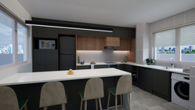
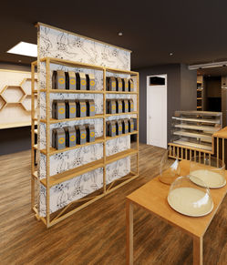
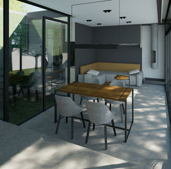
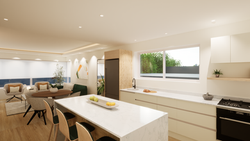
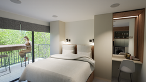
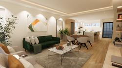

— Tate Linden
Below are selected projects where Jacolene had the privilege of collaborating with clients and professionals to turn ideas, visions, and dreams into thoughtfully designed spaces. Click any project to see the full story.





Ready to unlock the full potential of your interior? Let's begin with a conversation.